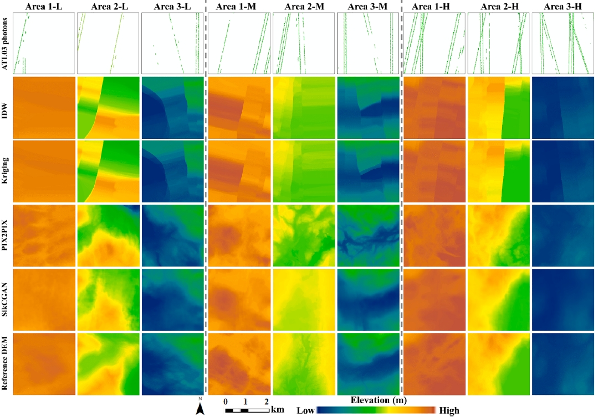

学术论文
Google Scholar：https://scholar.google.com/citations?user=YPp-qPcAAAAJ&hl=en
ResearchGate: https://www.researchgate.net/profile/Bin-Wu-30
ORCID: https://orcid.org/0000-0002-1511-2457
官网: 中大遥感学院官网
[30] Hailan Huang, Bin Wu*, Yu Wang, Bailang Yu, Huabing Huang, Wuming Zhang. Towards building floor-level nighttime light exposure assessment using SDGSAT-1 GLI data. ISPRS Journal of Photogrammetry and Remote Sensing, 2025, 223:375-397.
[29] Yi Zhao, Bin Wu*, Gefei Kong, He Zhang, Jianping Wu, Bailang Yu, Jin Wu*, Hongchao Fan. Generating high-resolution DEMs in mountainous regions using ICESat-2/ATLAS photons. International Journal of Applied Earth Observation and Geoinformation, 2025, 138: 104461. https://doi.org/10.1016/j.jag.2025.104461

[28] Guorong Li, Bin Wu*, Lei Yang, Zhan Pan, Linxin Dong, Siyu Wu, Guochun Shen, Jiarui Zhang, Tian Xiao, Lefeng Zhang, Jianping Wu, Bailang Yu*. QuadrantSearch: A novel method for registering UAV and backpack LiDAR point clouds in forested areas. IEEE Transactions on Geoscience and Remote Sensing, 1-17.https://doi.org/10.1109/TGRS.2024.3518056.
 [27] Yu Wang, Hailan Huang, Bin Wu*. Evaluating the Potential of Sdgsat-1 Glimmer Imagery for Urban Road Detection. IEEE Journal of Selected Topics in Applied Earth Observations and Remote Sensing, 2024, 1-9. https://dx.doi.org/10.1109/JSTARS.2024.3502218..
[26] Bin Wu, Yu Wang, Hailan Huang, Shaoyang Liu, Bailang Yu*. Potential of SDGSAT-1 nighttime light data in extracting urban main roads. Remote Sensing of Environment, 2024, 315: 114448.
[25] Bin Wu, Yu Wang, and Hailan Huang. Downscaling NPP-VIIRS Nighttime Light Data Using Vegetation Nighttime Condition Index. IEEE Journal of Selected Topics in Applied Earth Observations and Remote Sensing, 2024，17：: 18291-18302. https://dx.doi.org/10.1109/JSTARS.2024.3476191.
[24] Bin Wu, Hailan Huang, Yu Wang. Quantifying spatial patterns of urban building morphology in the China’s Guangdong-Hong Kong-Marco greater bay area. International Journal of Digital Earth, 2024, 17: 2392832.
[23] Bin Wu, Hailan Huang, Yu Wang, Shuxian Shi, Jianping Wu, Bailang Yu*. Global spatial patterns between nighttime light intensity and urban building morphology. International Journal of Applied Earth Observation and Geoinformation, 2023, 124: 103495.
[22] Bin Wu, Zhichao Song, Qiusheng Wu, Jianping Wu, Bailang Yu*. A Vegetation Nighttime Condition Index Derived From The Triangular Feature Space between Nighttime Light Intensity and Vegetation Index. IEEE Transactions on Geoscience and Remote Sensing, 2023, 1-15. https://doi.org/10.1109/TGRS.2023.3305457.
[21] Bin Wu, Hailan Huang, Yi Zhao*. Utilizing building offset and shadow to retrieve urban building heights with ICESat-2 photons. Remote Sensing, 2023, 15, 3786.
[20] Yi Zhao, Bin Wu*, Qiaoxuan Li, Lei Yang, Hongchao Fan, Jianping Wu, Bailang Yu*. Combining ICESat-2 photons and Google Earth Satellite images for building height extraction. International Journal of Applied Earth Observation and Geoinformation, 2023, 117: 103213.
[19] Bin Wu, Lei Yang, Qiusheng Wu, Yi Zhao, Zhan Pan, Tian Xiao, Jiarui Zhang, Jianping Wu, Bailang Yu. A Stepwise Minimum Spanning Tree Matching Method for Registering Vehicle-borne and Backpack LiDAR Point Clouds. IEEE Transactions on Geoscience and Remote Sensing, 2022, 60: 1-13. https://doi.org/10.1109/TGRS.2022.3226956
[18] Bin Wu, Chengshu Yang, Qiusheng Wu, Congxiao Wang, Jianping Wu, Bailang Yu*. A building volume adjusted nighttime light index for characterizing the relationship between urban population and nighttime light intensity. Computers, Environment and Urban Systems, 2023, 99: 101911.
[17] Yangguang Li, Zhichao Song, Bin Wu*, Bailang Yu, Qiusheng Wu, Yuchen Hong, Shaoyang Liu, Jianping Wu. Evaluating the ability of NOAA-20 monthly composite data for socioeconomic indicators estimation and urban area extraction. IEEE Journal of Selected Topics in Applied Earth Observations and Remote Sensing, 2022, 15: 1837-1845. doi: 10.1109/JSTARS.2022.3149028.
[16] Bin Wu, Chengshu Yang, Zuoqi Chen, Qiusheng Wu, Siyi Yu, Congxiao Wang, Qiaoxuan Li, Jianping Wu, and Bailang Yu*. The relationship between urban 2D/3D landscape pattern and nighttime light intensity. IEEE Journal of Selected Topics in Applied Earth Observations and Remote Sensing, 2022, 15:478-489. doi: 10.1109/JSTARS.2021.3135488.
[15] Yi Zhao, Bin Wu*, Song Shu, Lei Yang, Jianping Wu, Bailang Yu. Evaluation of ICESat-2 ATL03/08 surface heights in urban environments using airborne LiDAR point cloud data. IEEE Geoscience and Remote Sensing Letters, 2022, 19: 1-5. doi: 10.1109/LGRS.2021.3127540.
[14] Bin Wu, Bailang Yu, Song Shu, Handong Liang, Yi Zhao, Jianping Wu*. Mapping fine-scale visual quality distribution inside urban streets using mobile LiDAR data. Building and Environment, 2021, 206: 108323.
[13] Yuchen Hong, Bin Wu#, Zhichao Song, Yangguang Li, Qiusheng Wu, Zuoqi Chen, Shaoyang Liu, Chengshu Yang, Jianping Wu, and Bailang Yu*. A monthly nighttime light composite dataset of NOAA-20 in China: a multi-scale comparison with S-NPP. International Journal of Remote Sensing, 2021, 42 (20): 7931-7951.
[12] Hongxing Chen, Bin Wu#, Bailang Yu*, Zuoqi Chen, Qiusheng Wu, Ting Lian, Congxiao Wang, Qiaoxuan Li, Jianping Wu. A new method for building-level population estimation by integrating LiDAR, nighttime light, and POI data. Journal of Remote Sensing, 2021: 9803796.
[11] Bin Wu, Bailang Yu*, Song Shu, Qiusheng Wu, Yi Zhao, Jianping Wu*. A spatiotemporal structural graph for characterizing land cover changes. International Journal of Geographical Information Science, 2021, 35 (2): 397-425.
[10] Yi Zhao, Bin Wu*, Jianping Wu, Song Shu, Handong Liang, Min Liu, Vladimir Badenko, Alexander Fedotov, Shenjun Yao, Bailang Yu*. Mapping 3D visibility in an urban street environment from mobile LiDAR point clouds. GIScience & Remote Sensing, 2020, 57(6): 797-812.
[9] Bin Wu, Siyuan Wu, Yong Li, Jianping Wu, Yan Huang, Zuoqi Chen, Bailang Yu*. Automatic building rooftop extraction using a digital surface model derived from aerial stereo images. Journal of Spatial Science, 2022, 67: 67, 21-40.
[8] Bin Wu, Bailang Yu*, Shenjun Yao*, Qiusheng Wu, Zuoqi Chen, Jianping Wu. A surface network based method for studying urban hierarchies by night time light remote sensing data. International Journal of Geographical Information Science, 2019, 33(7): 1377-1398.
[7] Bin Wu, Bailang Yu*, Qiusheng Wu, Zuoqi Chen, Shenjun Yao, Yan Huang, Jianping Wu*. An Extended Minimum Spanning Tree method for characterizing local urban patterns. International Journal of Geographical Information Science, 2018, 32(3): 450-475.
[6] Bin Wu, Bailang Yu*, Qiusheng Wu, Shenjun Yao, Feng Zhao, Weiqing Mao, Jianping Wu A graph-based approach for 3D building model reconstruction from airborne LiDAR point clouds. Remote Sensing, 2017, 9(1): 92.
[5] Bin Wu, Bailang Yu*, Qiusheng Wu, Yan Huang, Zuoqi Chen, and Jianping Wu. Individual tree crown delineation using localized contour tree method and airborne LiDAR data in coniferous forests. International Journal of Applied Earth Observation and Geoinformation, 2016, 52: 82-94.
[4] Bin Wu, Bailang Yu*, Chang Huang, Qiusheng Wu, and Jianping Wu. Automated extraction of ground surface along urban roads from mobile laser scanning point clouds. Remote Sensing Letters, 2016, 7(2): 170-179.
[3] Bin Wu, Bailang Yu*, Wenhui Yue, Song Shu, Wenqi Tan, Chunling Hu, Yan Huang, Jianping Wu, Hongxing Liu. A voxel-based method for automated identification and morphological parameters estimation of individual street trees from mobile laser scanning data. Remote Sensing, 2013, 5(2): 584-611.
[2] 吴宾, 余柏蒗, 岳文辉, 谈文琦, 胡春凌, 吴健平. 一种基于车载激光扫描点云数据的单株行道树信息提取方法. 华东师范大学学报(自然科学版), 2013, (2): 38-49.
[1] Bin Wu, Bailang Yu, Wenhui Yue, Jianping Wu, Yan Huang. Voxel-based marked neighborhood searching method for identifying street trees using vehicle-borne laser scanning data [C]//Weng Q, Gamba P, Xian G, et al. Proceedings of the Second International Workshop on Earth Observation and Remote Sensing Applications (EORSA), Shanghai, China; IEEE. 2012, pp. 327-331.
[27] Yu Wang, Hailan Huang, Bin Wu*. Evaluating the Potential of Sdgsat-1 Glimmer Imagery for Urban Road Detection. IEEE Journal of Selected Topics in Applied Earth Observations and Remote Sensing, 2024, 1-9. https://dx.doi.org/10.1109/JSTARS.2024.3502218..
[26] Bin Wu, Yu Wang, Hailan Huang, Shaoyang Liu, Bailang Yu*. Potential of SDGSAT-1 nighttime light data in extracting urban main roads. Remote Sensing of Environment, 2024, 315: 114448.
[25] Bin Wu, Yu Wang, and Hailan Huang. Downscaling NPP-VIIRS Nighttime Light Data Using Vegetation Nighttime Condition Index. IEEE Journal of Selected Topics in Applied Earth Observations and Remote Sensing, 2024，17：: 18291-18302. https://dx.doi.org/10.1109/JSTARS.2024.3476191.
[24] Bin Wu, Hailan Huang, Yu Wang. Quantifying spatial patterns of urban building morphology in the China’s Guangdong-Hong Kong-Marco greater bay area. International Journal of Digital Earth, 2024, 17: 2392832.
[23] Bin Wu, Hailan Huang, Yu Wang, Shuxian Shi, Jianping Wu, Bailang Yu*. Global spatial patterns between nighttime light intensity and urban building morphology. International Journal of Applied Earth Observation and Geoinformation, 2023, 124: 103495.
[22] Bin Wu, Zhichao Song, Qiusheng Wu, Jianping Wu, Bailang Yu*. A Vegetation Nighttime Condition Index Derived From The Triangular Feature Space between Nighttime Light Intensity and Vegetation Index. IEEE Transactions on Geoscience and Remote Sensing, 2023, 1-15. https://doi.org/10.1109/TGRS.2023.3305457.
[21] Bin Wu, Hailan Huang, Yi Zhao*. Utilizing building offset and shadow to retrieve urban building heights with ICESat-2 photons. Remote Sensing, 2023, 15, 3786.
[20] Yi Zhao, Bin Wu*, Qiaoxuan Li, Lei Yang, Hongchao Fan, Jianping Wu, Bailang Yu*. Combining ICESat-2 photons and Google Earth Satellite images for building height extraction. International Journal of Applied Earth Observation and Geoinformation, 2023, 117: 103213.
[19] Bin Wu, Lei Yang, Qiusheng Wu, Yi Zhao, Zhan Pan, Tian Xiao, Jiarui Zhang, Jianping Wu, Bailang Yu. A Stepwise Minimum Spanning Tree Matching Method for Registering Vehicle-borne and Backpack LiDAR Point Clouds. IEEE Transactions on Geoscience and Remote Sensing, 2022, 60: 1-13. https://doi.org/10.1109/TGRS.2022.3226956
[18] Bin Wu, Chengshu Yang, Qiusheng Wu, Congxiao Wang, Jianping Wu, Bailang Yu*. A building volume adjusted nighttime light index for characterizing the relationship between urban population and nighttime light intensity. Computers, Environment and Urban Systems, 2023, 99: 101911.
[17] Yangguang Li, Zhichao Song, Bin Wu*, Bailang Yu, Qiusheng Wu, Yuchen Hong, Shaoyang Liu, Jianping Wu. Evaluating the ability of NOAA-20 monthly composite data for socioeconomic indicators estimation and urban area extraction. IEEE Journal of Selected Topics in Applied Earth Observations and Remote Sensing, 2022, 15: 1837-1845. doi: 10.1109/JSTARS.2022.3149028.
[16] Bin Wu, Chengshu Yang, Zuoqi Chen, Qiusheng Wu, Siyi Yu, Congxiao Wang, Qiaoxuan Li, Jianping Wu, and Bailang Yu*. The relationship between urban 2D/3D landscape pattern and nighttime light intensity. IEEE Journal of Selected Topics in Applied Earth Observations and Remote Sensing, 2022, 15:478-489. doi: 10.1109/JSTARS.2021.3135488.
[15] Yi Zhao, Bin Wu*, Song Shu, Lei Yang, Jianping Wu, Bailang Yu. Evaluation of ICESat-2 ATL03/08 surface heights in urban environments using airborne LiDAR point cloud data. IEEE Geoscience and Remote Sensing Letters, 2022, 19: 1-5. doi: 10.1109/LGRS.2021.3127540.
[14] Bin Wu, Bailang Yu, Song Shu, Handong Liang, Yi Zhao, Jianping Wu*. Mapping fine-scale visual quality distribution inside urban streets using mobile LiDAR data. Building and Environment, 2021, 206: 108323.
[13] Yuchen Hong, Bin Wu#, Zhichao Song, Yangguang Li, Qiusheng Wu, Zuoqi Chen, Shaoyang Liu, Chengshu Yang, Jianping Wu, and Bailang Yu*. A monthly nighttime light composite dataset of NOAA-20 in China: a multi-scale comparison with S-NPP. International Journal of Remote Sensing, 2021, 42 (20): 7931-7951.
[12] Hongxing Chen, Bin Wu#, Bailang Yu*, Zuoqi Chen, Qiusheng Wu, Ting Lian, Congxiao Wang, Qiaoxuan Li, Jianping Wu. A new method for building-level population estimation by integrating LiDAR, nighttime light, and POI data. Journal of Remote Sensing, 2021: 9803796.
[11] Bin Wu, Bailang Yu*, Song Shu, Qiusheng Wu, Yi Zhao, Jianping Wu*. A spatiotemporal structural graph for characterizing land cover changes. International Journal of Geographical Information Science, 2021, 35 (2): 397-425.
[10] Yi Zhao, Bin Wu*, Jianping Wu, Song Shu, Handong Liang, Min Liu, Vladimir Badenko, Alexander Fedotov, Shenjun Yao, Bailang Yu*. Mapping 3D visibility in an urban street environment from mobile LiDAR point clouds. GIScience & Remote Sensing, 2020, 57(6): 797-812.
[9] Bin Wu, Siyuan Wu, Yong Li, Jianping Wu, Yan Huang, Zuoqi Chen, Bailang Yu*. Automatic building rooftop extraction using a digital surface model derived from aerial stereo images. Journal of Spatial Science, 2022, 67: 67, 21-40.
[8] Bin Wu, Bailang Yu*, Shenjun Yao*, Qiusheng Wu, Zuoqi Chen, Jianping Wu. A surface network based method for studying urban hierarchies by night time light remote sensing data. International Journal of Geographical Information Science, 2019, 33(7): 1377-1398.
[7] Bin Wu, Bailang Yu*, Qiusheng Wu, Zuoqi Chen, Shenjun Yao, Yan Huang, Jianping Wu*. An Extended Minimum Spanning Tree method for characterizing local urban patterns. International Journal of Geographical Information Science, 2018, 32(3): 450-475.
[6] Bin Wu, Bailang Yu*, Qiusheng Wu, Shenjun Yao, Feng Zhao, Weiqing Mao, Jianping Wu A graph-based approach for 3D building model reconstruction from airborne LiDAR point clouds. Remote Sensing, 2017, 9(1): 92.
[5] Bin Wu, Bailang Yu*, Qiusheng Wu, Yan Huang, Zuoqi Chen, and Jianping Wu. Individual tree crown delineation using localized contour tree method and airborne LiDAR data in coniferous forests. International Journal of Applied Earth Observation and Geoinformation, 2016, 52: 82-94.
[4] Bin Wu, Bailang Yu*, Chang Huang, Qiusheng Wu, and Jianping Wu. Automated extraction of ground surface along urban roads from mobile laser scanning point clouds. Remote Sensing Letters, 2016, 7(2): 170-179.
[3] Bin Wu, Bailang Yu*, Wenhui Yue, Song Shu, Wenqi Tan, Chunling Hu, Yan Huang, Jianping Wu, Hongxing Liu. A voxel-based method for automated identification and morphological parameters estimation of individual street trees from mobile laser scanning data. Remote Sensing, 2013, 5(2): 584-611.
[2] 吴宾, 余柏蒗, 岳文辉, 谈文琦, 胡春凌, 吴健平. 一种基于车载激光扫描点云数据的单株行道树信息提取方法. 华东师范大学学报(自然科学版), 2013, (2): 38-49.
[1] Bin Wu, Bailang Yu, Wenhui Yue, Jianping Wu, Yan Huang. Voxel-based marked neighborhood searching method for identifying street trees using vehicle-borne laser scanning data [C]//Weng Q, Gamba P, Xian G, et al. Proceedings of the Second International Workshop on Earth Observation and Remote Sensing Applications (EORSA), Shanghai, China; IEEE. 2012, pp. 327-331.
[26] Yangguang Li, Bin Wu, Congxiao Wang, Zuoqi Chen, Shaoyang Liu, and Bailang Yu. Measuring human settlement wealth index at 10-km resolution in low- and middle-income countries from 2005 to 2020 using multi-source remote sensing data. International Journal of Digital Earth, 2024, 17(1):2353160. doi: 10.1080/17538947.2024.2353160. [25] Shaoyang Liu, Congxiao Wang, Zuoqi Chen, Wei Li, Lingxin Zhang, Bin Wu, Yan Huang, Yangguang Li, Jingwen Ni, Jianping Wu, Bailang Yu*. Efficacy of the SDGSAT-1 glimmer imagery in measuring sustainable development goal indicators 7.1.1, 11.5.2, and target 7.3. Remote Sensing of Environment, 2024, 305:114079. [24] Congxiao Wang, Zuoqi Chen, Bailang Yu, Bin Wu, Ye Wei, Yuan Yuan, Shaoyang Liu, Yue Tu, Yangguang Li, Jianping Wu. Impacts of COVID-19 on urban networks: Evidence from a novel approach of flow measurement based on nighttime light data. Computers, Environment and Urban Systems, 2024, 107:102056. [23] 华婧, 吴宾, 陈佐旗, 杨成术, 唐曦, 孙斐然, 吴健平, 余柏蒗*. 精准扶贫背景下中国贫困县夜间灯光的时空变化分析. 遥感学报, 2022, doi:10.11834/jrs.20221856. [22] 刘少阳, 陈佐旗, 施开放, 吴宾, 魏冶, 王丛笑, 黎夏, 吴健平, 余柏蒗*. 21世纪以来新疆城市化演化格局与过程：来自夜间灯光遥感的发现, 遥感学报, 2022（已录用）. [21] Zuoqi Chen, Bailang Yu*, Yong Li, Qiusheng Wu, Bin Wu, Yan Huang, Siyuan Wu, Siyi Yu, Weiqing Mao, Feng Zhao, Jianping Wu. Assessing the potential and utilization of solar energy at the building-scale in Shanghai, Sustainable Cities and Society, 2022, 82:103917. [20] Zuoqi Chen, Ye Wei, Kaifang Shi, Zhiyuan Zhao, Congxiao Wang, Bin Wu, Bingwen Qiu, Bailang Yu*. The potential of nighttime light remote sensing data to evaluate the development of digital economy: A case study of China at the city level, Computers, Environment and Urban Systems, 2022, 92, 101749. [19] Zuoqi Chen, Bailang Yu*, Chengshu Yang, Yuyu Zhou, Shenjun Yao, Xingjian Qian, Congxiao Wang, Bin Wu, Jianping Wu. An extended time series (2000–2018) of global NPP-VIIRS-like nighttime light data from a cross-sensor calibration. Earth System Science Data, 2021, 13(3): 889-906. [18] 余柏蒗，王丛笑，宫文康，陈佐旗，施开放，吴宾，洪宇辰，李乔玄，吴健平. 夜间灯光遥感与城市问题研究：数据、方法、应用和展望. 遥感学报, 2021, 25(1): 342-364. [17] Song Shu, Hongxing Liu, Frédéric Frappar, Emily Lei Kang, Bo Yang, Min Xu, Yan Huang, Bin Wu, Bailang Yu, Shujie Wang, Beck Richard, Hinkel Kenneth. Improving satellite waveform altimetry measurements with a probabilistic relaxation algorithm. IEEE Transactions on Geoscience and Remote Sensing, 2021, 59(6): 4733-4748. [16] Bo Yang, Hongxing Liu*, Emily L. Kang, Song Shu, Min Xu, Bin Wu, Richard A. Beck, Kenneth M. Hinkel, Bailang Yu*. Spatio-temporal Cokriging method for assimilating and downscaling multi-scale remote sensing data. Remote Sensing of Environment, 2021, 255, 112190. [15] 王琼, 吴宾, 姚申君, 吴健平, 周颖, 张静. 城市绿地演化轨迹与变化研究——以上海市外环以内区域为例. 华东师范大学学报(自然科学版), 2021(2): 100-109. [14] Siyi Yu, Zuoqi Chen, Bailang Yu, Lei Wang, Bin Wu, Jianping Wu, Feng Zhao. Exploring the relationship between 2D/3D landscape pattern and land surface temperature based on explainable eXtreme Gradient Boosting tree: A case study of Shanghai, China. Science of The Total Environment, 2020, 725: 138229. [13] Bin Cheng, Zuoqi Chen, Bailang Yu, Qiaoxuan Li, Congxiao Wang, Biebei Li, Bin Wu, Yong Li, Jianping Wu. Automated extraction of street lights from JL1-3B nighttime light data and assessment of their solar energy potential. IEEE Journal of Selected Topics in Applied Earth Observations and Remote Sensing, 2020, 13: 675-684. [12] Ningcheng Wang, Yufan Liu, Jinzi Wang, Xingjian Qian, Xizhi Zhao, Jianping Wu, Bin Wu, Shenjun Yao, and Lei Fang. Investigating the potential of using POI and nighttime light data to map urban road safety at the micro-level: A case in Shanghai, China. Sustainability, 2019, 11(17): 4739. [11] 赵习枝, 吴宾, 吴健平, 余柏蒗. 基于实有人口数据的城市公园绿地服务分析——以上海市外环以内区域为例. 华东师范大学学报(自然科学版), 2017, 2017(1): 104-112. [10] Siyi Yu, Bailang Yu, Wei Song, Bin Wu, Jianhua Zhou, Yan Huang, Jianping Wu, Feng Zhao, Weiqing Mao. View-based greenery: A three-dimensional assessment of city buildings’ green visibility using Floor Green View Index. Landscape and Urban Planning, 2016, 152:13-26. [9] 黄益修, 吴宾, 吕振华, 余柏蒗, 吴健平. 基于 OpenLayers 和 MongoDB 的船舶信息管理系统开发. 测绘与空间地理信息, 2016, 39(4):147-149. [8] 彭晨, 余柏蒗, 吴宾, 吴健平. 基于移动激光扫描点云特征图像和SVM的建筑物立面半自动提取方法. 地球信息科学学报, 2016, 18(7):878-885. [7] 吴君涵, 余柏蒗, 彭晨, 吴宾, 虞思逸, 黄益修, 吴健平. 基于移动激光扫描点云数据和遥感图像的建筑物三维模型快速建模方法. 测绘与空间地理信息, 2016, 39(1):24-27. [6] Yan Huang, Zuoqi Chen, Bin Wu, Liang Chen, Weiqing Mao, Feng Zhao, Jianping Wu, Junhan Wu, Bailang Yu. Estimating Roof Solar Energy Potential in the Downtown Area Using a GPU-Accelerated Solar Radiation Model and Airborne LiDAR Data. Remote Sensing, 2015, 7(12):17212-17233. [5] 虞思逸, 吴宾, 谈文琦, 岳文辉, 胡春凌, 吴健平, 余柏蒗. 利用车载激光扫描的城市森林三维绿量估算. 测绘科学 , 2015, 40(9):82-87. [4] 闫海涛, 吴宾, 殷兵, 吴健平, 余柏蒗. 基于ArcEngine的电力三维可视化系统设计与实现, 测绘与空间地理信息. 2015, (04):84-87+91. [3] Hao Lin, Bailang Yu, Zuoqi Chen, Yingjie Hu, Yan Huang, Jianping Wu, Bin Wu, Rong Ge. A geospatial web portal for sharing and analyzing greenhouse gas data derived from satellite remote sensing images. Frontiers of Earth Science, 2013, 7(3):295-309. [2] Yan Huang, Bailang Yu, Zhiming Hu, Jianping Wu, Bin Wu. Locating suitable roofs for utilization of solar energy in downtown area using airborne LiDAR data and object-based method: A case study of the Lujiazui region, Shanghai [C]//Weng Q, Gamba P, Xian G, et al. Proceedings of the Second International Workshop on Earth Observation and Remote Sensing Applications (EORSA), Shanghai, China; IEEE. 2012, pp. 322-326. [1] Zhiming Hu, Jianping Wu, Bin Wu, Song Shu, Bailang Yu. Simulating and mapping the variations of solar radiation at the Lujiazui region of Shanghai using airborne LiDAR data, in: The Proceedings of 2010 International Conference on Remote Sensing (C. Hangzhou, ed.), IEEE, 2010, pp. 305-308.